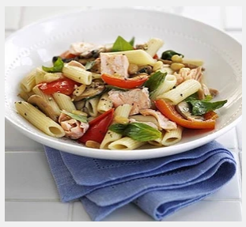

SALMON PASTA

Description
Love salmon pasta and looking for healthy dinner inspo? Try our lighter recipe made with salmon, penne, veg and basil – it's fresh, tasty and packed with goodness.
Ingredients
- 350g penne
- 2 salmon steaks, about 175g/6oz each
- 1 tbsp olive oil
- 2 tbsp pine nut
- 1 red pepper, deseeded and chopped
- 300g mushroom, sliced
- handful basil leaves
Steps
- Cook the pasta following pack instructions, adding the salmon to the water 6 mins before the end of the cooking time.
- Heat the oil in a pan, then cook the pine nuts until toasted. Add the pepper and fry until softened. Tip in the mushrooms and stir until they start to soften, then add a ladleful of the pasta water.
- When the pasta is cooked, remove the salmon to a plate, then drain the pasta. Fork the salmon into flakes and add to the vegetables along with the pasta and the basil leaves. Season with pepper and lightly toss together before serving